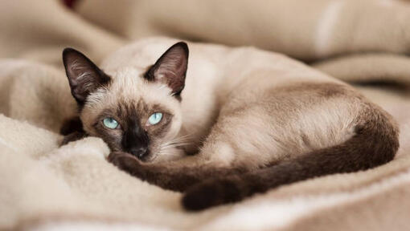

แมววิเชียรมาศ (Siamese cat)
เชื่อว่าเหล่าบรรดาทาสแมวทั้งหลายคงไม่มีใครไม่รู้จักน้องแมวพันธุ์วิเชียรมาศ หรือ แมวสยาม (Siamese cat) ที่เป็นดั่งตัวแทนสายพันธุ์แมวแห่งประเทศไทย ที่นอกจากจะมีเอกลักษณ์จากลวดลายและสีขนบนตัวอันงดงามแล้ว ยังมีลักษณะนิสัยที่เป็นมิตร ขี้อ้อน จนสามารถคว้าใจเหล่าบรรดาทาสแมวมาแล้วทั่วโลก อีกทั้งยังช่วยเสริมโชคลาภ และเป็นสิริมงคลแก่ครอบครัวตามความเชื่อของคนไทยในสมัยโบราณอีกด้วย หากใครกำลังสนใจอยากได้น้องแมวสักตัวไปเลี้ยงเป็นเพื่อนแล้วล่ะก็ น้องแมววิเชียรมาศนับว่าเป็นแมวอีกสายพันธุ์ที่ควรรับไว้พิจารณาอย่างยิ่ง
ขนาดของแมววิเชียรมาศ
น้องแมวพันธุ์วิเชียรมาศ ถือเป็นแมวขนาดกลาง มีน้ำหนักตัวเฉลี่ยอยู่ที่ 2.9 – 3.4 กิโลกรัม โตเต็มวัยที่อายุ 1 ปี เข้าสู่วัยชราที่อายุ 7 ปี มีอายุขัยประมาณ 15-20 ปี แมววิเชียรมาศตามธรรมชาติเป็นแมวนักล่าที่กินเนื้อสัตว์เป็นอาหาร จึงมีรูปร่างที่ปราดเปรียว และว่องไว มีกล้ามเนื้อหาที่แข็งแรงสำหรับการกระโจน วิ่ง และปีนต้นไม้ มีหู ตาที่ไว และมีสัญชาตญาณนักล่าสูง
ลักษณะนิสัย
ด้วยความที่ตามธรรมชาติแล้ว แมวพันธุ์วิเชียรมาศเป็นแมวที่ล่าสัตว์กินเองเป็นอาหาร จึงทำให้แมววิเชียรมาศมีความปราดเปรียวสูง เคลื่อนที่คล่องแคล่ว ว่องไว และมีสัญชาตญาณการเป็นนักล่าที่ดี มีความระแวงระวังภัยให้กับตัวเองสูง แต่ในขณะเดียวกันก็รักสงบ รักเจ้าของ และขี้อ้อนมาก
นอกจากนี้แมววิเชียรมาศยังมีลักษณะนิสัยช่างพูดคุย จนได้รับฉายาว่า Extremely talkative cat หรือแมวช่างพูด อันมีที่มาจากลักษณะนิสัยที่ชอบส่งเสียงร้อง ทั้งเพื่อพูดคุยกับเจ้าของ และบ่งบอกความต้องการของตัวเอง มีอุปนิสัยชอบเข้าสังคม และอยากรู้อยากเห็นสิ่งแปลกใหม่อยู่เสมอ หากใครชอบแมวที่มีนิสัยขี้อ้อน และช่างพูดคุยแล้ว แมววิเชียรมาศนับเป็นอีกสายพันธุ์หนึ่งที่ควรรับไว้พิจารณาเลยทีเดียว
ประวัติความเป็นมา
ถิ่นกำเนิด: ประเทศไทย
ชื่ออื่น ๆ
ประวัติและความเป็นมาของแมวพันธุ์วิเชียรมาศนั้นนับว่าอยู่คู่กับสังคมไทยมาช้านาน ตั้งแต่สมัยอยุธยา โดยในสมัยนั้นแมววิเชียรมาศนับว่าเป็นแมวชั้นสูงที่ถูกเลี้ยงไว้เฉพาะภายในบริเวณพระบรมมหาราชวัง เพราะเชื่อว่าเป็นแมวมงคล ช่วยเสริมโชคลาภให้แก่ผู้เลี้ยงดู สามัญชนในสมัยนั้นจะไม่ได้รับอนุญาตให้เลี้ยงได้
คำว่าวิเชียรมาศ มีความหมายว่า เพชรแห่งดวงจันทร์ มาจากลักษณะของแมวที่มีดวงตาสีฟ้าดุจเพชร และสีลำตัวขาวนวลคล้ายดวงจันทร์ เป็นที่รู้จักกันอีกชื่อในนามแมวแก้ว และแมวสยาม (Siamese cat) ซึ่งมีชื่อเสียงโด่งดังไปทั่วโลกจากการที่ในสมัย พ.ศ. 2427 พระบาทสมเด็จพระจุลจอมเกล้าเจ้าอยู่หัว ได้ทรงพระราชทานลูกแมววิเชียรมาศให้เป็นของขวัญแด่ทูตชาวอังกฤษ ต่อมาทูตท่านนั้นได้ให้การเลี้ยงดูลูกแมววิเชียรมาศเป็นอย่างดี และได้ส่งเข้าประกวดในเวที The Crystal Palace London ที่ถูกจัดขึ้น ณ พระราชวังคริสตัล ประเทศอังกฤษ โดยในการประกวดครั้งนั้น แมววิเชียรมาศได้รับชัยชนะ ส่งผลให้แมววิเชียรมาศเริ่มมีชื่อเสียง และรู้จักกันในชื่อ Siamese cat หรือแมวที่มาจากประเทศไทย เป็นที่นิยมมากในหมู่ผู้เลี้ยงแมวประเทศอังกฤษ จนถึงขั้นมีการจัดตั้งชมรมผู้เลี้ยงแมววิเชียรมาศขึ้นเลยทีเดียว ต่อมาพระบาทสมเด็จพระจุลจอมเกล้าเจ้าอยู่หัวได้ทรงพระราชทานแมววิเชียรมาศให้ทูตจากอีกหลายประเทศ ไม่ว่าจะเป็นประเทศสหรัฐอเมริกา หรือประเทศเพื่อนบ้าน ส่งผลให้เกิดการแพร่กระจายของสายพันธุ์แมววิเชียรมาศไปทั่วโลกในเวลาต่อมา
หน้าแรก